Visual Deep-Dive · 실제 캡처 40여 장 기반 · 2026-09-18
OmniRoute 무료 모델 게이트웨이
왕초보 완벽분석가이드
Claude Opus/Sonnet 토큰이 소진됐을 때 대신 쓸 영구 무료 AI 모델 5개를 OmniRoute(로컬 LLM 게이트웨이)에 실제로 연결한 전 과정입니다.
정리된 정답만 보여주는 대신 중간에 빠졌던 함정과 그걸 알아챈 방법까지 순서대로 남겼습니다 — 무료처럼 보이지만 아닌 것, 이름은 같지만 다른 커넥터, 테스트를 통과한 것처럼 보였지만 사실 실패했던 구간까지. 같은 함정은 다른 서비스에서도 똑같은 모양으로 반복되기 때문입니다.
결론 — 최종 구성
긴 과정을 다 읽기 전에, 무엇으로 끝났는지부터.
프론트엔드 역할별 직접 호출
성격이 서로 달라서 폴백 체인으로 묶지 않고, 작업 종류에 따라 골라 부릅니다.
- 판단 · 설계 kiro/claude-sonnet-4.5 화면 구조, 상태관리 위치 같은 결정. 월 50크레딧뿐이라 아껴 씀
- UI 코드 작성 — 기본값 · 대량 작업 zai/glm-4.7-flash 폼·리스트·스타일 등 실제 컴포넌트 코드. 만료 없는 영구 무료라 반복 작업도 여기가 받아냄
- 예비 — 하루 20건 gemini/gemini-3.8-flash GLM이 막혔을 때만 쓰는 비상용. 한도가 작아 대량 작업엔 쓸 수 없음
백엔드 순차 폴백 콤보
이름 Free-fallback · 전략 Priority — 앞이 막히면 자동으로 다음으로.
- kiro/claude-sonnet-4.5판단력 최고, 월 50크레딧
- groq/qwen/qwen3.8-27b오픈웨이트 상위권, 분당 3만 토큰
- gemini/gemini-3.8-flash하루 20건
- mistral/codestral-latest월 10억 토큰, 최후 보루
Z.ai · Kiro · Groq · Google AI Studio · Mistral — 각각 계정 하나씩. Kiro와 Gemini는 프론트/백엔드 양쪽에서 같은 계정을 공유합니다.
5가지 핵심 원칙
이번에 겪은 실수를 다음에도 쓸 수 있는 규칙으로 바꾼 것. 이 문서에서 가장 값어치 있는 부분입니다.
"Z.ai Web", "Gemini Web (Free)" 같은 항목은 브라우저 로그인 세션(쿠키/토큰)을 재활용하는 방식입니다. 사람용 화면의 캡차를 자동 우회하기 때문에 세션이 끊기면 멈추고, 약관 위반 소지도 있습니다. 반드시 "API 키" 분류에 있는 정식 커넥터를 고르세요. 이 함정은 Z.ai와 Gemini에서 두 번 똑같이 나타났습니다.
같은 "무료"라도 두 종류입니다. ① 주기적으로 리셋되는 진짜 무료(Groq의 분당 제한, Kiro의 월 50크레딧, Mistral의 월 10억 토큰)와 ② 가입 시 한 번만 주는 크레딧(DeepSeek 500만 토큰, Qoder 14일 체험판). ②번은 다 쓰면 영구 유료로 바뀌므로 무료 체인에 넣으면 안 됩니다. 판단 기준은 하나 — "다 쓰면 다시 채워지는가?"
Z.ai는 8개, Groq는 17개, Mistral은 48개가 전부 활성 상태로 시작했습니다. 그 안에 유료 모델이 섞여 있으면 라우팅될 때 과금될 수 있습니다. "모두 숨기기"를 먼저 누른 뒤 쓸 모델 하나만 켜는 순서가 안전합니다.
Anthropic에 Claude Sonnet 5가 존재한다는 사실과, Kiro가 그걸 제공한다는 사실은 별개입니다. Kiro 무료 티어는 4.5까지만 서빙하고 있어서 claude-sonnet-5로 요청하니 33ms 만에 거부당했습니다. 서드파티 무료 플랫폼은 보통 최신 세대를 몇 달 늦게 반영합니다.
이번에 1순위 Claude Sonnet이 완전히 죽어 있었는데도, 2순위 Qwen이 즉시 받아내서 겉보기에는 콤보가 정상 작동했습니다. 테스트 화면에서 단계별 결과를 하나씩 보지 않았다면 "가장 좋은 모델을 쓰고 있다"고 착각한 채로 계속 갔을 겁니다. 폴백은 안정성을 주는 대신 문제를 조용하게 만듭니다.
실행 체크리스트
진행 상태는 이 브라우저에만 저장됩니다. 순서대로 따라가면 됩니다.
공급자 화면 찾기
모든 등록의 출발점. localhost:20128 → 왼쪽 메뉴 공급자.
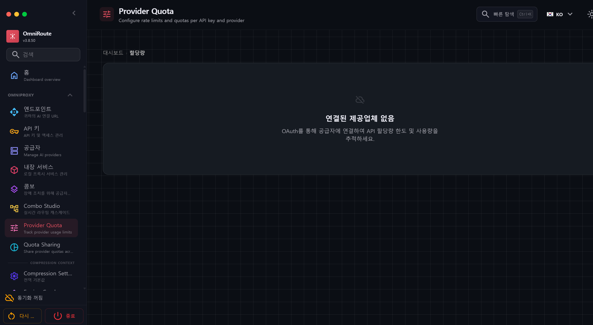
클릭하면 확대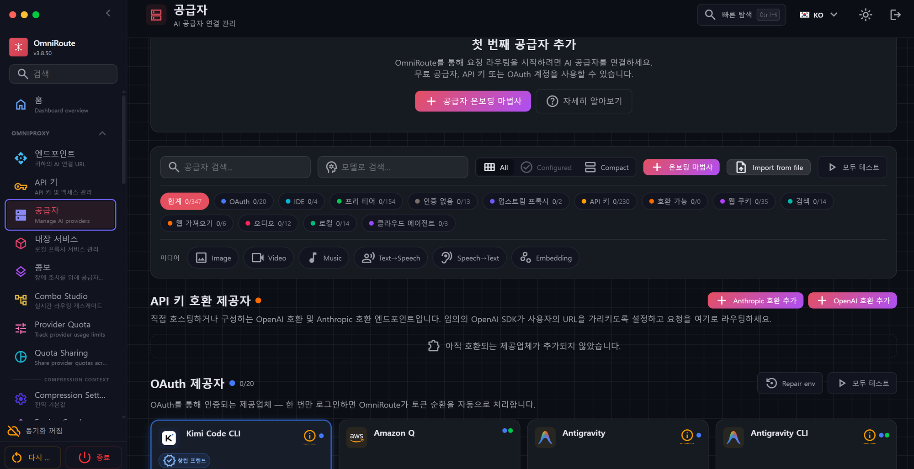
클릭하면 확대왼쪽 사이드바에서 "공급자" 바로 아래 "내장 서비스"가 붙어 있어서 실제로 잘못 들어갔습니다. "내장 서비스"는 CLIProxyAPI·9Router 같은 로컬 프록시 엔진을 관리하는 화면이고, AI 모델을 등록하는 곳이 아닙니다.
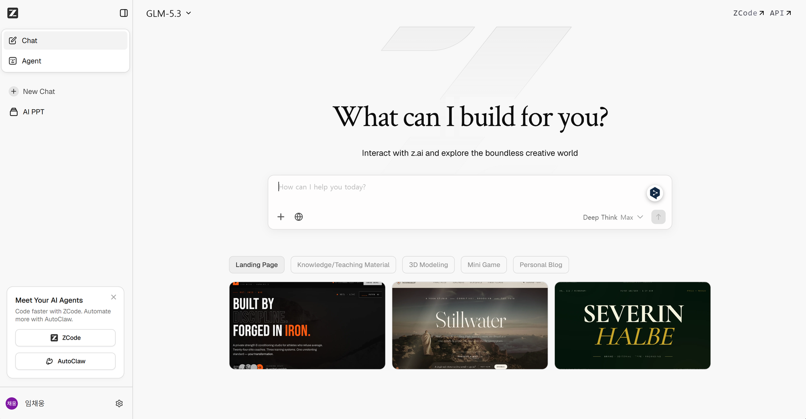
클릭하면 확대Z.ai — GLM-4.7-Flash
프론트엔드 UI 코드 작성 기본값 · API 키 방식 · 입력/출력 $0, 만료 없음
공급자 검색창에 Z.ai를 치면 이 카드가 먼저 나옵니다. 안내문에 "Z.ai Web은 API 키 대신 브라우저 웹 세션을 사용합니다"라고 명시돼 있고, chat.z.ai에 로그인한 뒤 DevTools로 token 값을 복사해오라고 시킵니다.
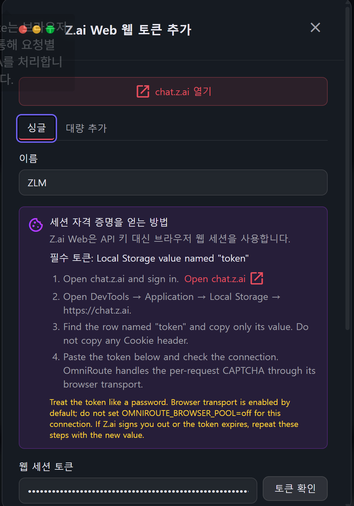
클릭하면 확대z.ai 사이트 우측 상단의 API ↗ 링크로 들어가면 진짜 개발자 콘솔이 열립니다. 거기서 키를 발급받아, 제목이 "Z.AI API 키 추가"인 카드에 넣어야 합니다.
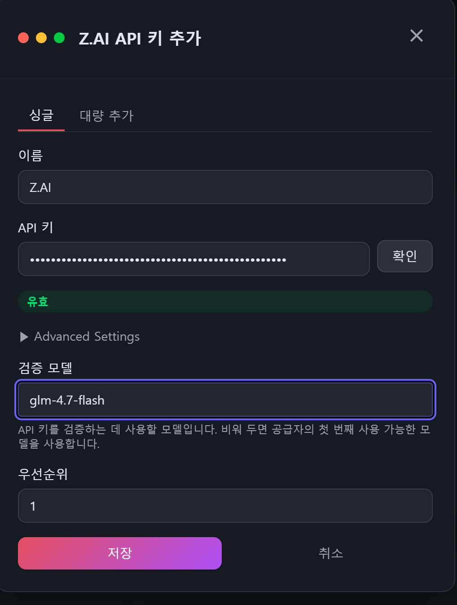
클릭하면 확대Z.AI · API 키 붙여넣고 "확인" → 초록색 유효 표시 · 검증 모델 glm-4.7-flash · 우선순위 1
우선순위 오해 주의 — 이건 우리가 만들 폴백 체인과 무관합니다. 같은 프로바이더에 키를 여러 개 등록했을 때 어느 키를 먼저 쓸지 정하는 값이라, 계정이 하나면 항상 1입니다.
연결 후 — 속도 제한 보호 켜기
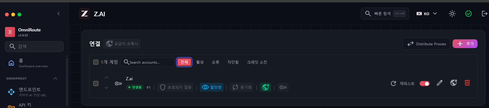
클릭하면 확대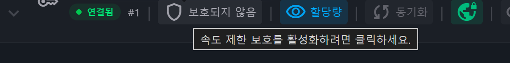
클릭하면 확대모델 정리 — 8개 중 1개만 남기기
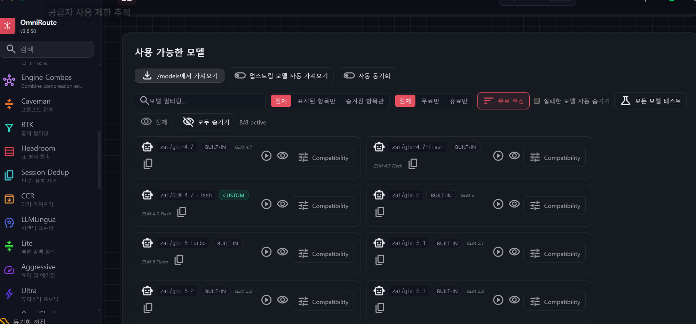
클릭하면 확대glm-5.3 glm-5.2 glm-5.1 glm-5 glm-5-turbo glm-4.7 — 무료가 확인된 건 glm-4.7-flash 하나뿐인데 나머지도 다 열려 있습니다.
여기서 실수로 중복 등록했던 CUSTOM 항목(GLM-4.7-Flash)도 발견해 삭제했습니다.
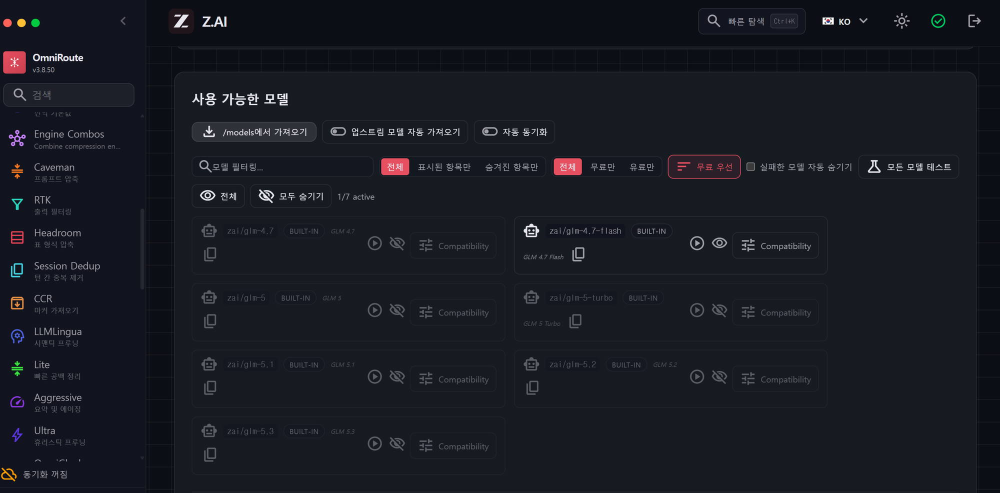
클릭하면 확대Kiro — Claude Sonnet 4.5
프론트엔드백엔드 판단·설계 전담 + 백엔드 1순위 · OAuth · 월 50크레딧(AWS가 "perpetual"로 명시)
여긴 API 키가 필요 없습니다. Connect Kiro → AWS Builder ID(또는 Google/GitHub) 로그인 → 권한 허용이 전부입니다. AWS Builder ID가 없어도 이메일만으로 그 자리에서 만들 수 있습니다.
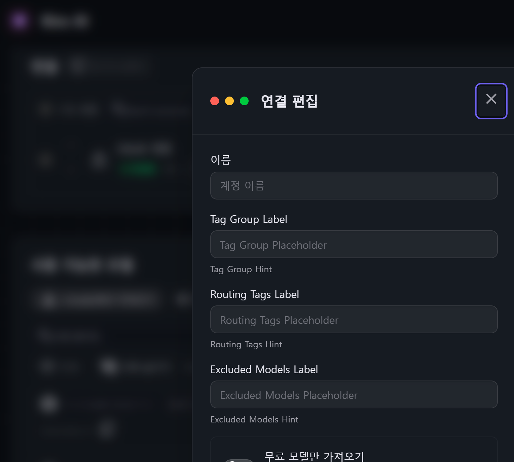
클릭하면 확대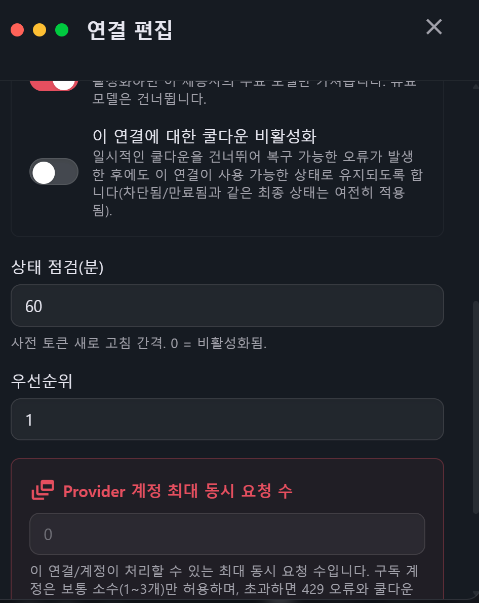
클릭하면 확대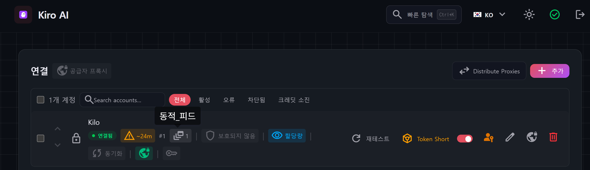
클릭하면 확대⚠ ~24m / Token Short — OAuth 토큰 갱신 주기를 알려주는 정상 표시입니다. 에러가 아닙니다.
이름 "Kilo" — 실제로는 "Kiro"인데 오타로 입력됐습니다. 기능엔 영향 없지만 헷갈리니 연필 아이콘으로 고치는 편이 낫습니다.
Groq — Qwen3.8-27B
백엔드 로직·알고리즘 담당 2순위 · API 키 · 분당 3만 토큰, 일 14,400회, 카드 등록 불필요
console.groq.com가입(카드 불필요) → API Keys → Create API Key → 생성 즉시 복사- OmniRoute 공급자 검색
Groq→ 키 붙여넣기 → 저장 - 모델 목록에서
qwen/qwen3.8-27b만 켜고 나머지 16개 숨기기
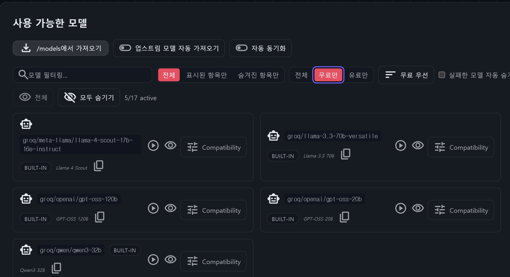
클릭하면 확대groq/qwen/qwen3-32b 카드
비슷한 이름의 다른 세대 모델입니다. 이것 때문에 "Qwen3.8은 Groq에 없나 보다"라고 잘못 결론 내릴 뻔했습니다.
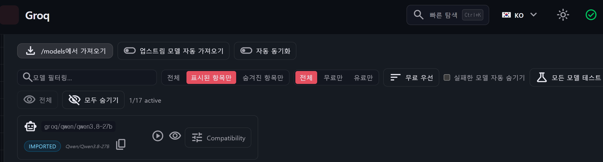
클릭하면 확대/models에서 가져오기로 최신 목록을 새로 불러왔을 때 추가된 모델입니다.
최신 모델일수록 IMPORTED로 나타나니, 찾는 모델이 안 보이면 이 버튼을 먼저 눌러보세요.
Gemini — Google AI Studio
프론트엔드백엔드 소량 백업 · API 키 · 하루 20건 · 분당 10건
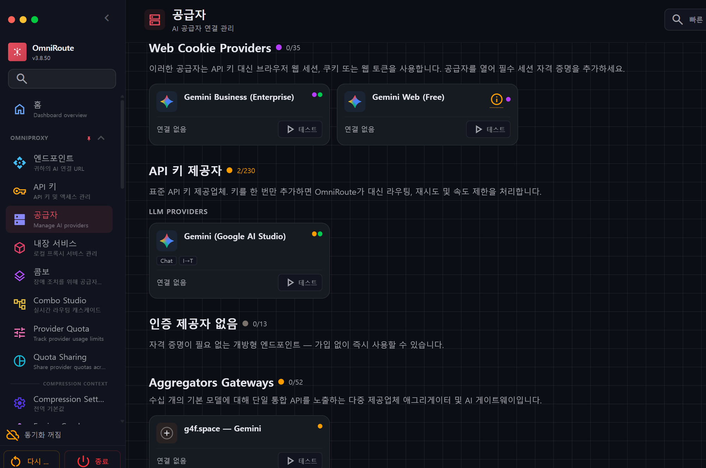
클릭하면 확대✗ Gemini Web (Free) — "Web Cookie Providers" 섹션. 원칙 1의 함정, Z.ai에서 이미 겪은 그 방식입니다.
✗ Gemini Business (Enterprise) — 기업용이라 개인 무료와 무관.
aistudio.google.com/apikey접속 → 평소 쓰는 구글 계정으로 로그인- Create API Key → 생성된 키 복사
- OmniRoute → "Gemini (Google AI Studio)" 카드 → 키 붙여넣기 → 저장
- 모델 목록에서
gemini-3.8-flash(순수 텍스트 버전)만 활성화
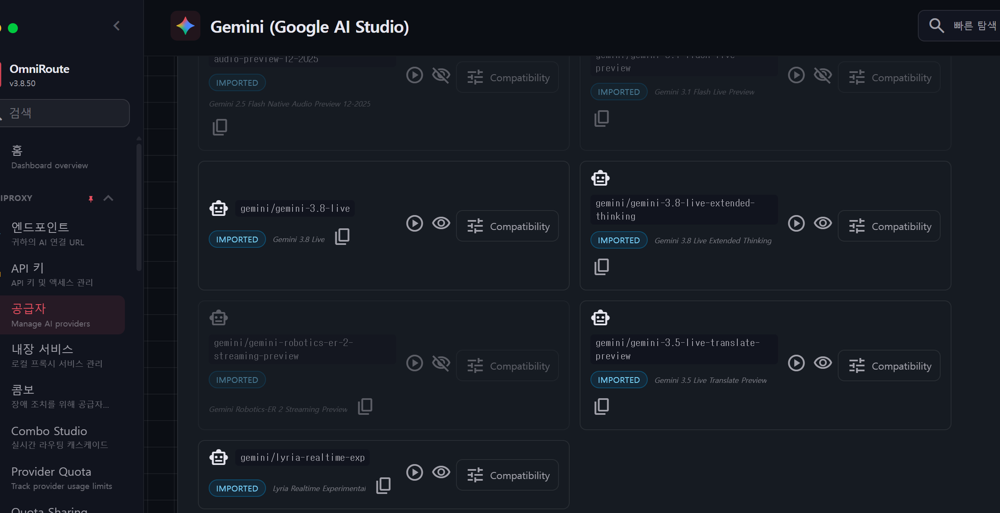
클릭하면 확대gemini-3.8-live는 전화 통화하듯 실시간으로 음성을 주고받는 Live API용, robotics-er-2-streaming은 로봇 제어, lyria-realtime은 음악 생성입니다.
이름이 비슷해 헷갈리기 쉬우니 모델 필터에 3.8-flash로 검색해서 정확히 찾으세요.
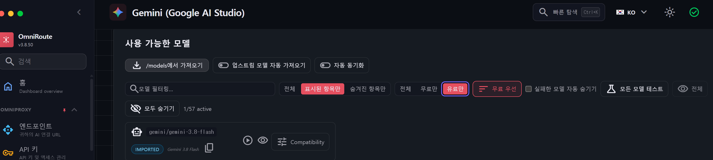
클릭하면 확대원래 알고 있던 정보는 "분당 25만 토큰의 압도적 무료 한도"였는데, "유료만" 필터에 이 모델이 걸렸습니다. 구글 공식 문서(ai.google.dev/gemini-api/docs/pricing)를 다시 확인한 결과:
| 잘못 알고 있던 것 | 공식 문서 기준 사실 | |
|---|---|---|
| 과금 | 무료 | 무료 맞음 (Free of charge) |
| 한도 | 분당 25만 토큰 | 하루 20건 · 분당 10건 |
| 역할 | 대량 반복 작업의 주력 폴백 | 사실상 소량 백업밖에 안 됨 |
구글 개발자 포럼에도 "20 RPD는 실제로 테스트하기엔 너무 적다"는 글이 올라와 있습니다. Cloud Billing이 연결된 계정이면 OmniRoute가 "유료 등급 사용 가능"으로 인식할 수 있는데, 사용량이 무료 한도 안이면 실제 과금은 발생하지 않습니다.
Mistral — Codestral
백엔드 최후 보루 · API 키 · 월 약 10억 토큰(Experiment 티어, 상시 유지)
프랑스 Mistral AI의 코딩 특화 모델입니다. 체인 맨 끝에 둔 이유가 "한도가 커서"만은 아닙니다 — HumanEval 86.6%에 응답 시작이 200ms 이내로 빠르고, 80개 이상 언어의 코드 중간 채우기(FIM)에 특화돼 있습니다. 다만 여러 파일을 넘나드는 복잡한 조율은 약해서, 단순·빠른 코드 완성용으로 적합합니다.
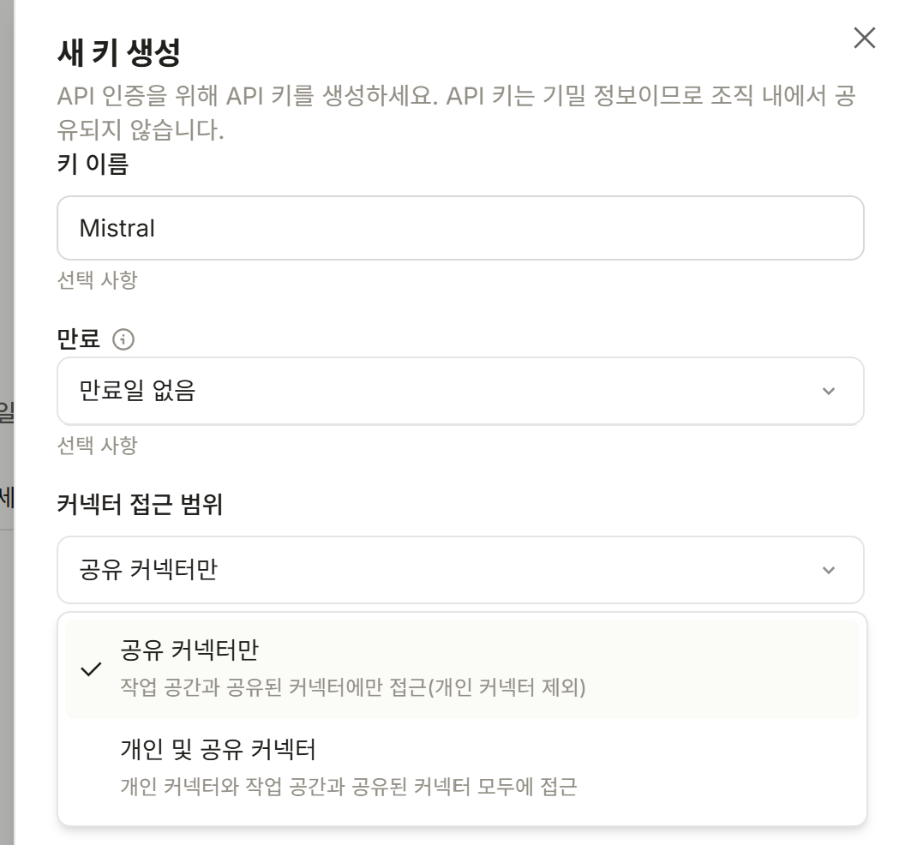
클릭하면 확대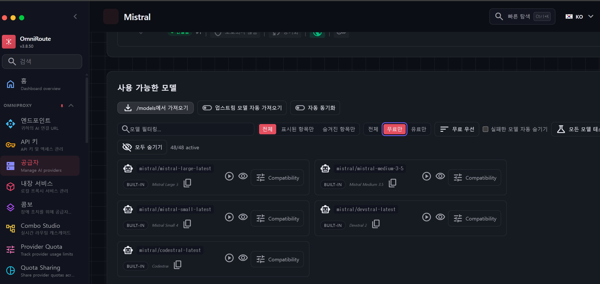
클릭하면 확대codestral-latest만 다시 켜세요.
엔드포인트와 터널
결론부터 — 터널은 아무것도 켜지 않습니다.
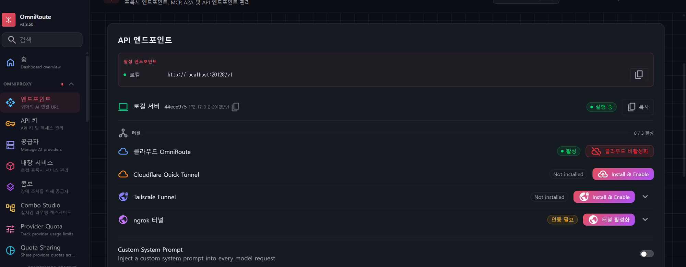
클릭하면 확대http://localhost:20128/v1
마지막 단계(Claude Code CLI 연결)에서 쓸 주소입니다. 나머지 터널 항목은 건드리지 않습니다.
클라우드 OmniRoute · Cloudflare Quick Tunnel · Tailscale Funnel · ngrok — 전부 이 로컬 서버를 인터넷에 공개해서 다른 기기에서 접속하게 해주는 기능입니다. Claude Code와 OmniRoute가 같은 PC에 있으면 필요 없고, 켜면 오히려 API 키가 걸린 게이트웨이가 외부에 노출됩니다.
헷갈리기 쉬운 지점 — "폰에서 kdance 앱을 미리보고 싶다"는 것과는 완전히 다른 문제입니다. 그건 OmniRoute(20128번)가 아니라 Expo 개발 서버(8081번)를 터널링해야 하는 별개의 작업입니다.
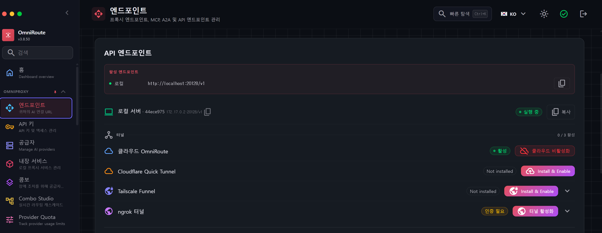
클릭하면 확대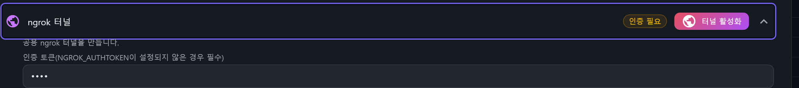
클릭하면 확대백엔드 콤보 Free-fallback 만들기
계정 5개를 각각 연결한 것만으로는 자동 전환이 안 됩니다. 우선순위 체인으로 묶는 단계.
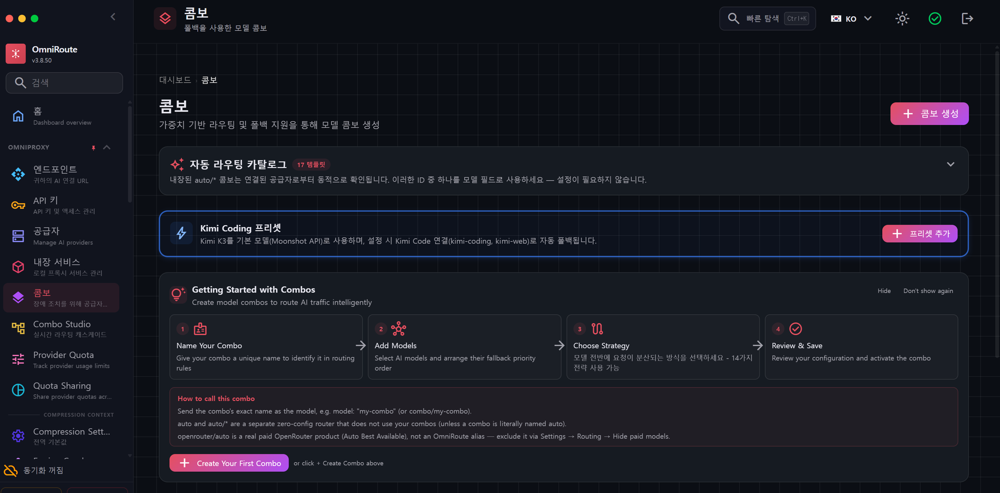
클릭하면 확대1단계 — Basics (이름 짓기)
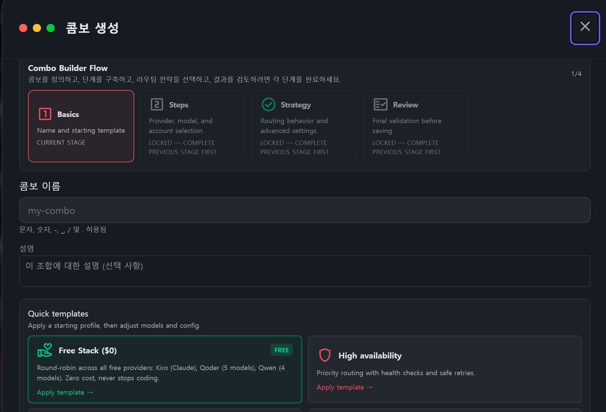
클릭하면 확대Free-fallback설명은 비워둬도 됩니다.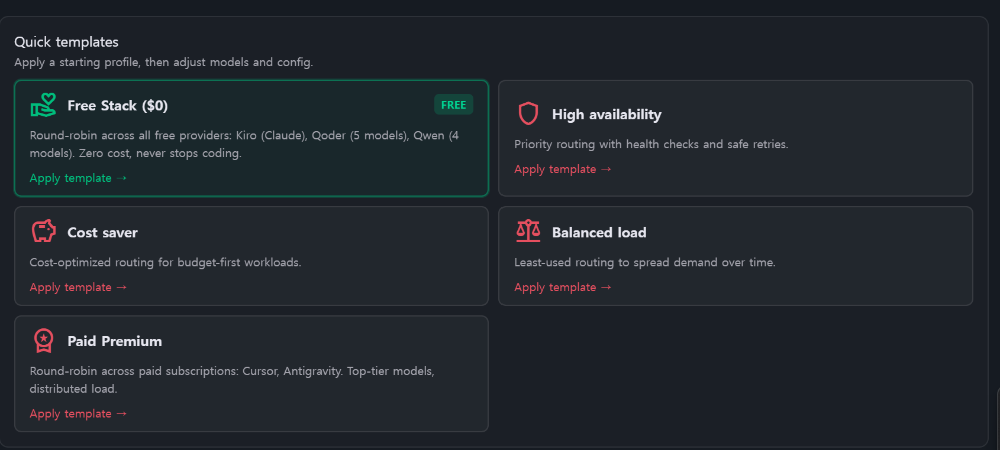
클릭하면 확대2단계 — Steps (모델을 순서대로 추가)
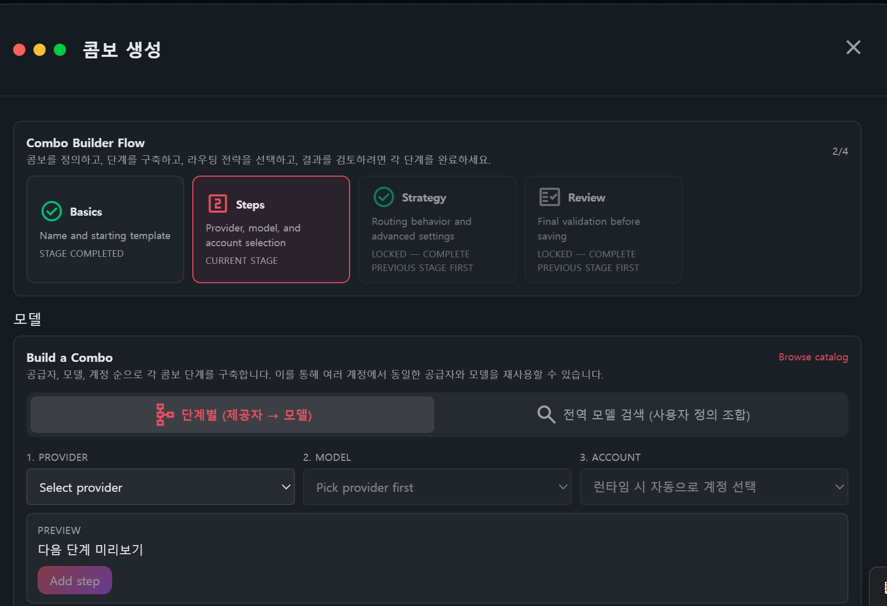
클릭하면 확대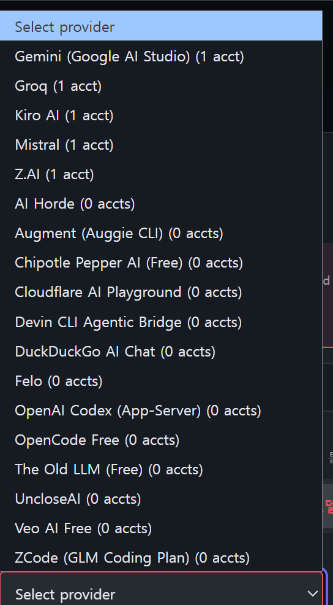
클릭하면 확대(1 acct)로 보이면 앞 단계가 다 성공한 것입니다.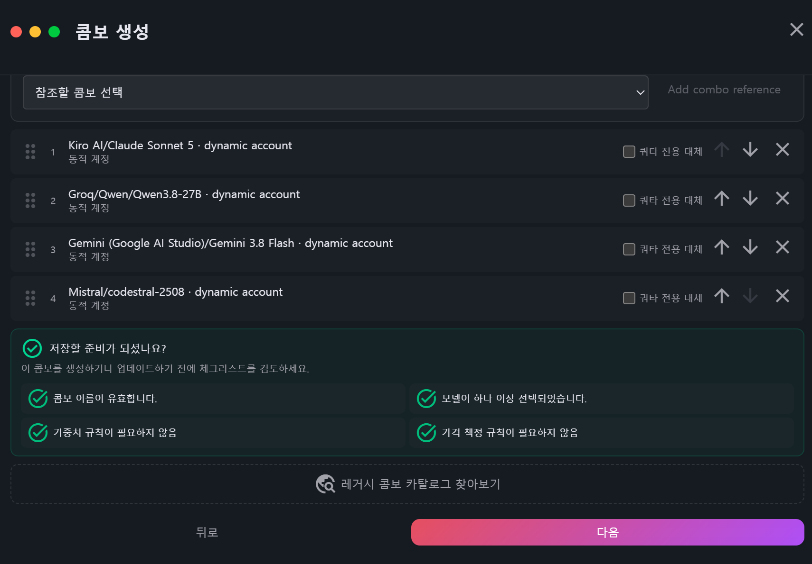
클릭하면 확대codestral-2508로 표시되는데, 이는 codestral-latest가 가리키는 구체적 버전이라 정상입니다.
3단계 — Strategy (전략 선택)
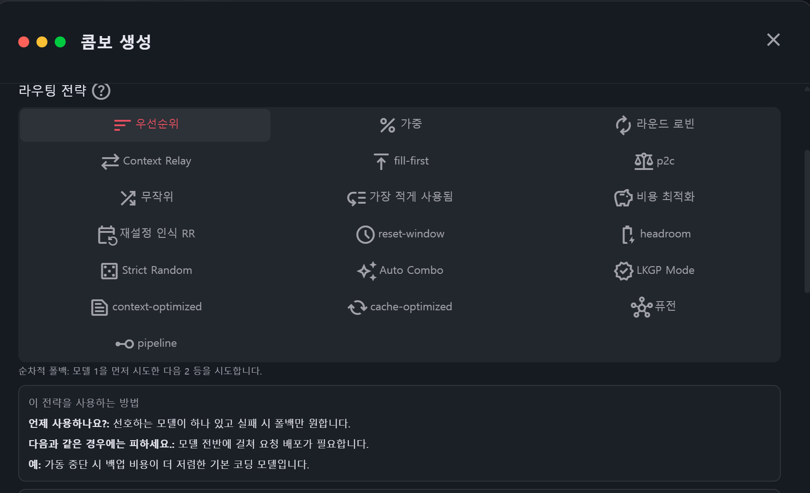
클릭하면 확대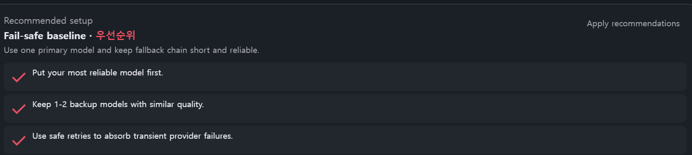
클릭하면 확대고급 설정 — 하나만 켜고 나머지는 비우기
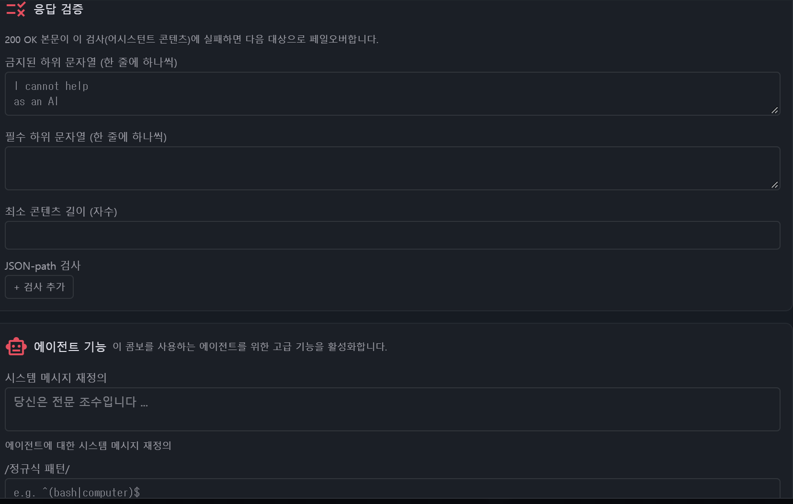
클릭하면 확대I cannot help, as an AI 같은 거절 문구가 섞이면 실패로 간주하고 다음 모델로 넘어갑니다.
안전성 튜닝이 과한 일부 오픈모델이 평범한 코딩 요청에도 얼버무리는 경우가 있어서, 폴백 체인과 잘 맞습니다.
필수 하위 문자열 / 최소 콘텐츠 길이 — 코딩 응답은 한 줄 수정부터 긴 리팩터링까지 형태가 제각각이라, 고정 규칙을 걸면 정상 응답이 실패로 처리될 위험이 더 큽니다.
에이전트 기능(시스템 메시지 재정의 · 도구 필터 정규식 · 컨텍스트 길이) — 지금 구성에는 필요 없습니다. 컨텍스트 길이를 비워두면 각 모델이 원래 지원하는 크기를 자동으로 씁니다.
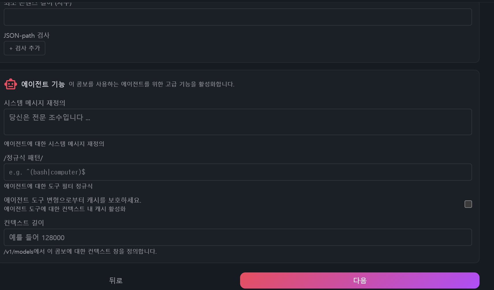
클릭하면 확대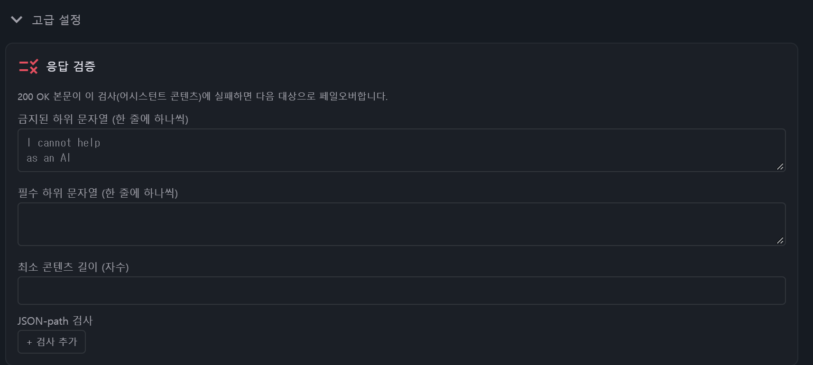
클릭하면 확대4단계 — Review
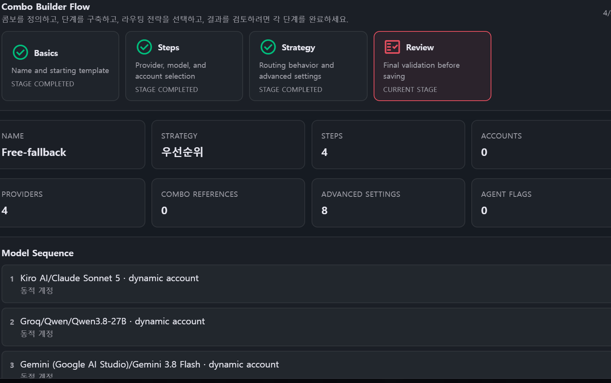
클릭하면 확대Free-fallback인 이유
원래 계획한 이름은 be-fallback이었는데 실제 입력은 Free-fallback이 됐고, 이 이름으로 테스트까지 통과한 뒤였기에 다시 바꾸지 않고 그대로 확정했습니다.
나중에 Claude Code에서 모델명으로 이 문자열을 정확히 지정해야 하므로, 문서·규칙 전부 이 이름으로 통일해뒀습니다.
테스트 — 실패를 발견하고 고치기
이 문서에서 가장 중요한 단계. 원칙 5가 실제로 벌어진 장면입니다.
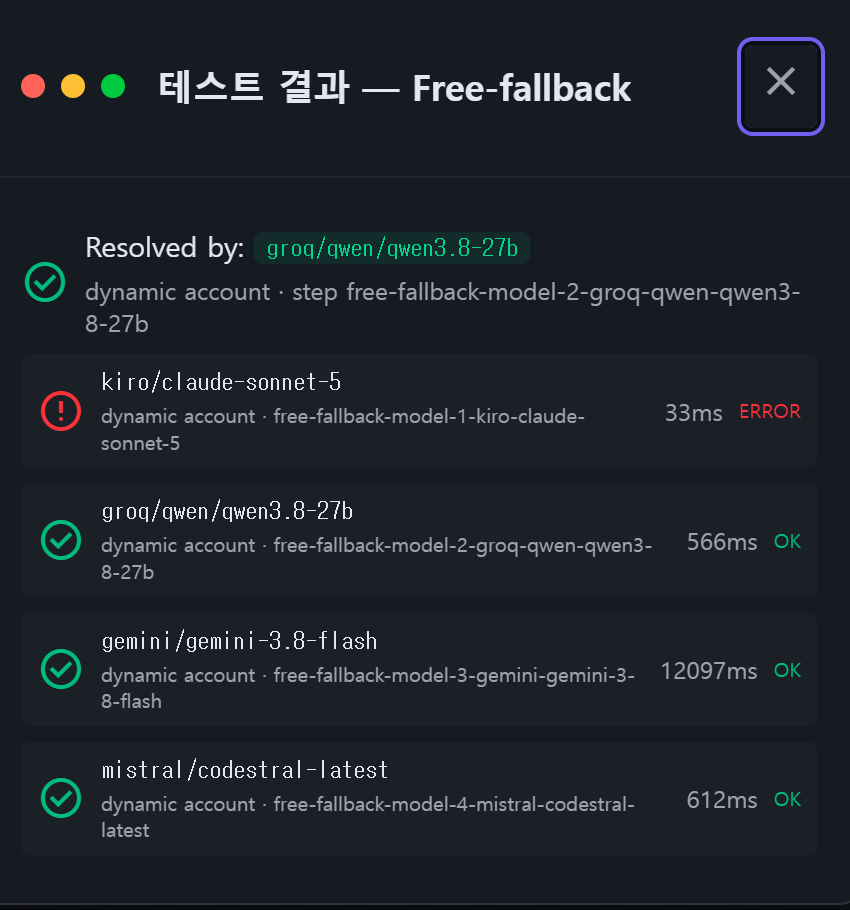
클릭하면 확대groq/qwen/qwen3.8-27b로 해결됐다고 나옵니다 — 즉 1순위를 건너뛰고 2순위가 응답한 것입니다. 단계별 목록을 열어보지 않으면 그냥 "성공"으로 보입니다.
원인 추적 과정
- 예산 가드 의심 → 기각. 같은 가드(
maxCost:0, block)가 걸린 상태에서 나머지 3개는 정상 응답했습니다. - Kiro 연결 불량 의심 → 기각. 할당량 조회 결과
tokenStatus: valid, 사용량 0으로 정상이었습니다. - 모델 ID 의심 → 적중. 33ms라는 비정상적으로 빠른 실패가 단서였습니다. 네트워크 문제라면 이렇게 빨리 끝나지 않습니다. "그런 모델 없음" 류의 즉시 거부라는 뜻입니다.
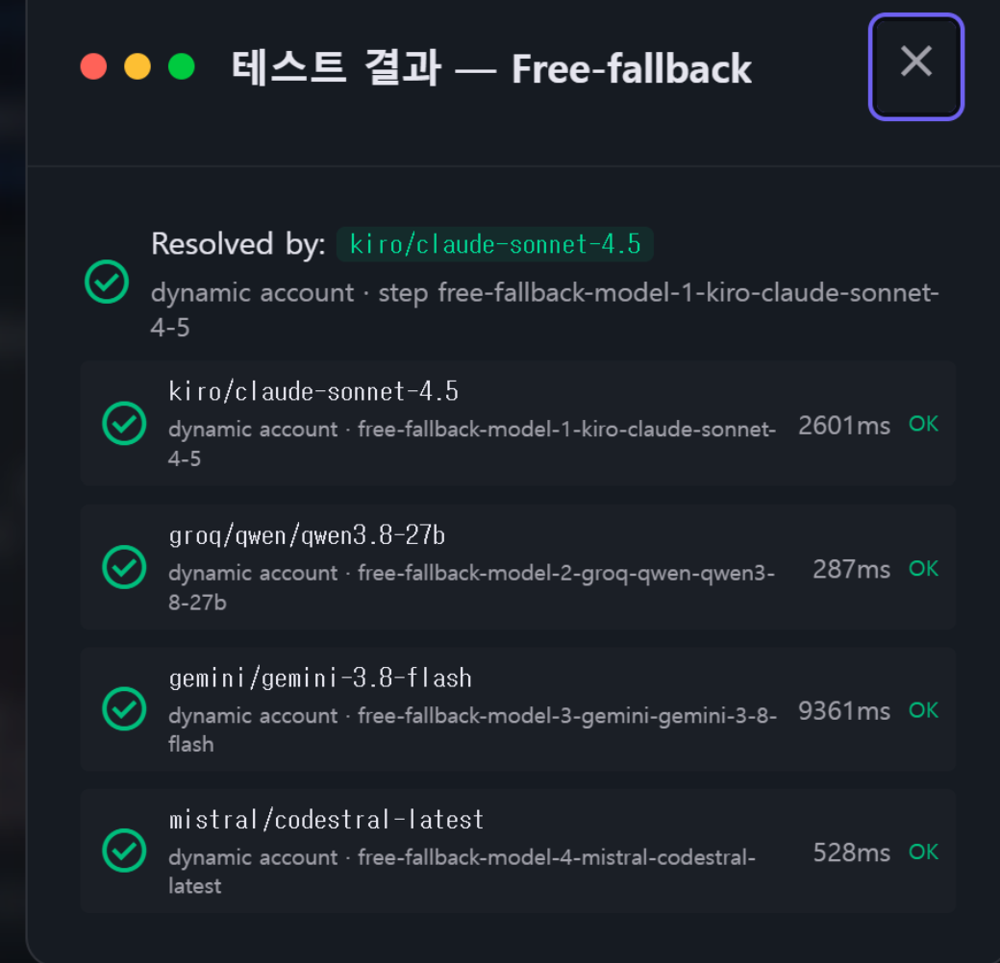
클릭하면 확대| 순위 | 모델 | 응답시간 | 결과 |
|---|---|---|---|
| 1 | kiro/claude-sonnet-4.5 | 2,601ms | OK |
| 2 | groq/qwen/qwen3.8-27b | 287ms | OK |
| 3 | gemini/gemini-3.8-flash | 9,361ms | OK |
| 4 | mistral/codestral-latest | 528ms | OK |
Groq가 287ms로 압도적으로 빠릅니다(LPU 전용 하드웨어). Gemini는 9.3초로 가장 느려서, 하루 20건 한도와 합치면 실시간 작업용으로는 더더욱 부적합하다는 게 숫자로도 확인됩니다. Kiro(Claude)는 2.6초로 품질 대비 무난합니다.
Claude Code CLI 연결
마지막 단계. 실제 요청을 보내 동작을 확인한 뒤 실행 스크립트로 정리했습니다.
Anthropic 형식 요청을 게이트웨이에 직접 쏴서 확인한 결과입니다.
| 확인 항목 | 결과 |
|---|---|
| HTTP 상태 | 200 · 2.31s |
| 응답한 모델 | claude-sonnet-4.5 — 1순위에서 바로 해결(폴백 안 탐) |
Free-fallback 노출 | /v1/models 목록에 정상 등장 |
| API 키 | OmniRoute 관리 키를 그대로 사용 — 별도 발급 불필요 |
ANTHROPIC_BASE_URL | /v1 유무 둘 다 동작 — OmniRoute가 양쪽 경로를 모두 받음 |
즉 이 구성은 이론이 아니라 실제로 통하는 것이 확인된 상태입니다.
환경변수는 이미 실행 중인 프로세스에는 적용되지 않습니다. 따라서 현재 Claude Code 세션은 계속 Anthropic 공식 API로 동작하고, 무료 체인은 새로 여는 터미널부터 적용됩니다. 이건 의도한 구조이기도 합니다 — 중요한 판단은 유료 세션, 소진 후·반복 작업은 무료 체인.
방법 A — 실행 스크립트 (권장)
매번 세 줄을 치는 대신 스크립트 하나로 띄웁니다. 키는 리포에 넣지 않고 실행 시점에 ~/.claude.json에서 읽습니다.
cd ~/kdance
scripts/claude-free.sh # 무료 체인으로 Claude Code 실행
scripts/claude-free.sh --continue # claude에 넘길 인자는 그대로 전달
① 게이트웨이 생존 확인 — 죽어 있으면 Docker 켜라는 안내와 함께 즉시 중단(요청 전부 실패하는 상황 예방)
② 키 자동 주입 — ~/.claude.json에서 읽어오므로 키를 복사해 둘 필요 없음
③ 모델 지정 — ANTHROPIC_MODEL=Free-fallback을 자동으로 걸어줌
주소·콤보를 바꾸고 싶으면 OMNIROUTE_URL, OMNIROUTE_COMBO 환경변수로 덮어쓸 수 있습니다.
방법 B — 수동
export ANTHROPIC_BASE_URL=http://localhost:20128
export ANTHROPIC_API_KEY=<~/.claude.json 의 omniroute Authorization 값>
export ANTHROPIC_MODEL=Free-fallback
claudeomniroute run claude --model auto를 권하지 않나
auto는 OmniRoute 자체의 내장 자동 라우터를 쓰는 옵션이라, 우리가 만든 Free-fallback 콤보를 타지 않습니다.
실제로 /v1/models 목록에도 auto/best-free, auto/coding:free 같은 별도 항목으로 존재합니다 —
이름이 비슷해 헷갈리지만 우리가 정한 우선순위와 무관한 다른 체계입니다.
Docker — 매번 뭘 켜야 하나
결론부터: Docker Desktop만 켜면 됩니다. 명령어를 칠 필요가 없습니다.
OmniRoute는 여러분 PC에 직접 설치된 프로그램이 아니라 컨테이너로 돌아갑니다. 프로그램 하나와 그게 필요로 하는 모든 것(라이브러리·설정·파일)을 상자 하나에 통째로 담아 격리해서 돌리는 방식입니다. 상자째 옮기면 어느 PC에서든 똑같이 동작하고, 지울 때도 상자만 버리면 되니 PC가 지저분해지지 않습니다. 그 상자를 관리하는 프로그램이 Docker이고, Windows에서 쓰는 형태가 Docker Desktop입니다.
즉 Docker Desktop이 꺼져 있으면 상자도 전부 멈춰 있습니다. OmniRoute가 응답하지 않는 원인은 거의 항상 이겁니다.
restart=unless-stopped
각 상자에는 "언제 자동으로 켤지"를 정하는 옵션이 붙어 있습니다.
이 프로젝트의 상자 4개는 전부 unless-stopped로 걸려 있습니다.
말 그대로 풀면 "내가 직접 멈춘 게 아니라면(unless stopped) 알아서 다시 켜라"입니다.
그래서 Docker Desktop이 뜨는 순간 상자 4개가 같이 올라옵니다.
docker start omniroute 같은 명령을 따로 칠 필요가 없습니다.
| 상자 이름 | 하는 일 | 자동 기동 |
|---|---|---|
omniroute | 무료 모델 게이트웨이 | O |
kdance-db | PostgreSQL 데이터베이스 (5433번 문) | O |
kdance-redis | Redis 캐시 (6380번 문) | O |
ollama | 로컬 AI 모델 실행기 | O |
직접 확인하려면 docker ps를 쳐보세요.
네 개가 healthy로 떠 있으면 정상입니다.
순서대로 하면
1. Docker Desktop 실행
2. 작업표시줄 고래 아이콘이 초록색이 될 때까지 대기 (보통 30~90초)
3. cd ~/kdance && ai # ai 는 claude-free.sh 의 별칭예전에 그 상자를 손으로 멈춰둔 경우입니다.
unless-stopped는 사람이 의도적으로 멈춘 상자는 일부러 켜지 않습니다
— 그게 옵션 이름의 "unless-stopped" 부분이 뜻하는 바입니다.
이때만 수동으로 켭니다.
docker start omniroute # 이 경우에만 필요
docker ps # omniroute 가 healthy 로 뜨는지 확인
curl -s http://localhost:20128/api/health # 응답이 오면 준비 완료docker 명령이 없다고 나올 때
Docker Desktop이 꺼져 있다는 뜻입니다.
Docker Desktop은 실행될 때 WSL 안에 docker 명령을 넣어주는데(WSL 통합),
꺼져 있으면 그 명령이 사라집니다.
"The command 'docker' could not be found in this WSL 2 distro" 메시지가 뜨면
설정이 잘못된 게 아니라 그냥 Docker Desktop을 켜면 해결됩니다.
부록 — 제외된 모델과 그 이유
후보에 올랐다가 탈락한 것들. 왜 탈락했는지가 다음 재검증의 기준이 됩니다.
| 후보 | 탈락 사유 | 분류 |
|---|---|---|
| Qoder 경유 GLM-5.2 / Kimi K2.6 | 14일 · 300크레딧 체험판. 끝나면 프리미엄 모델 접근이 막힘 | 원칙 2 위반 |
| DeepSeek 자체 API | 가입 시 500만 토큰 1회 지급 후 영구 유료. 매달 리셋 없음 | 원칙 2 위반 |
| DeepSeek R1 Distill (Groq) | 2025-01 출시 구형 + 수학/추론 특화라 일반 코딩엔 강점 약함 | 세대·용도 불일치 |
| DeepSeek V3.2 (Kiro) | 무료는 맞지만 Claude Sonnet과 같은 월 50크레딧을 나눠 쓸 뿐 — 새 용량이 아님 | 실익 없음 |
| Kimi (Groq) | 2026-03-23부로 Groq에서 지원 종료(gpt-oss-120b로 대체) | 경로 소멸 |
| OpenRouter 무료 모델 | 무료 목록이 20개→14개로 축소되는 등 불안정, 분당 20건·일 200건 제한 | 안정성 부족 |
| Perplexity / Grok / Kimi K3 | 각각 강점은 있으나(리서치 / 문서·UI 생성 / 프론트엔드 1위) API에 상시 무료 티어가 없음 | 원칙 2 위반 |
이 구성은 2026-11-01부터 3개월 주기(2/1 · 5/1 · 8/1 · 11/1)로 클라우드 루틴이 자동 재검증합니다. 검사 기준은 셋 — ① OmniRoute로 연결 가능한 경로인가 ② 영구 무료인가(체험판·1회성 크레딧 제외) ③ 최신 세대이고 용도가 맞는가. 결과는 보고서만 생성하고 문서를 자동 수정하지는 않습니다.